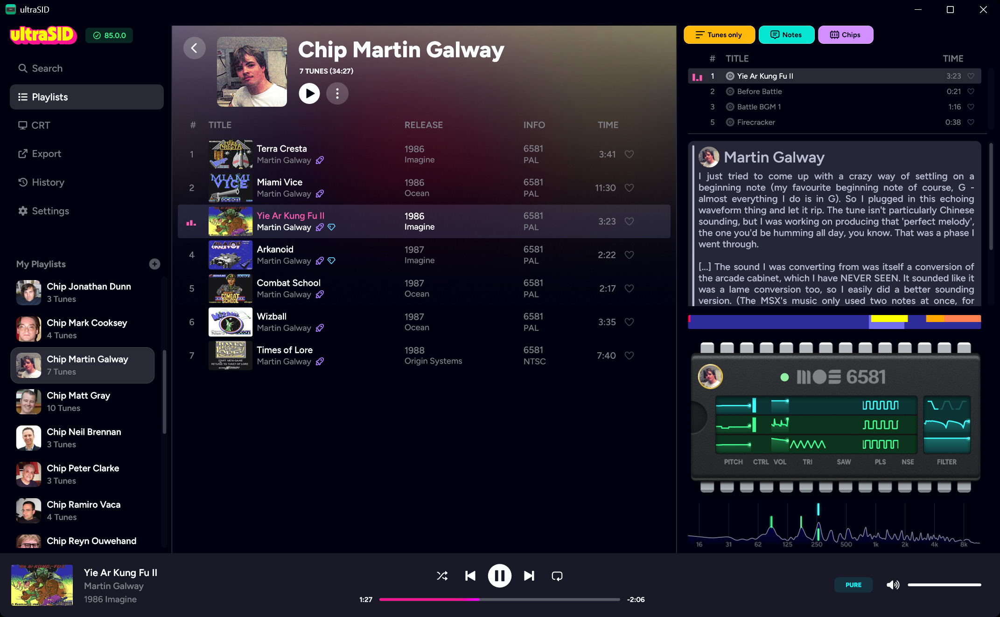
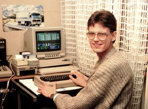

Finally, a SID player
that feels like a music app
ultraSID plays the whole High Voltage SID Collection the way you'd expect from Spotify or Apple Music: search as you type, playlists, favorites, scrubbing. It even fetches the collection for you and keeps it up to date.
Free and open source. A real native app, not a web page in disguise. What's new
Screenshots
A look inside

Features
Nothing to learn, nothing to configure
If you've used a music app, you already know how ultraSID works.
The collection, handled
ultraSID installs the High Voltage SID Collection for you and keeps it up to date. Nothing to download by hand, ever.
Search as you type
Type a title, an author or a game. The whole collection narrows down while you type.
The stories behind the tunes
STIL notes right next to what's playing: who wrote it, what it was for, what the author remembers.
Playlists, favorites, history
Build playlists, mark favorites, pick up where you left off. Drag tunes in, drag them around, select a bunch at once. Like any music app.
Scrubbing and song lengths
Jump to any point in a tune. Tracks know how long they are and end when they should.
Looks like it sounds
Title screens and game screenshots on an emulated CRT, matched to the tune that's playing.
Watch the chip play
Three voices, the filter and the digi samples, live, on a chip you can actually see.
Approved
Checked by the authors themselves
These composers listened to their own tunes in ultraSID and signed off on the chip profile. When you play their music, you hear the sound they had on their desk when they wrote it all these years ago, the way they intended it to be heard.
- Martin Galway
- Matt Gray

Chris Hülsbeck- Reyn Ouwehand
- Jeroen Tel
Sound
Sounds right out of the box
Everything below is on by default or one switch away. Nothing to tweak unless you want to.
Sounds like the author's chip
The most popular authors have their own chip profiles, so their tunes sound the way they did on their own C64. More are added over time.
Same loudness, every tune
Quiet tunes and loud tunes play at the same perceived volume, so you stop reaching for the knob. Optional.
Audio enhancements
Magic, Epic or Mythic: stereo width, delay, reverb and bass in three doses, from subtle to cranked to 11. Optional.
Stereo placement
Multi-chip tunes that suit it get curated stereo width. The rest stay mono, as intended. Optional.
Any number of chips
Most players stop at three SIDs. ultraSID has no limit, so exotic tunes play as written, even the ten-chip ones.
Export to WAV, FLAC or OGG
Single tunes or whole playlists, rendered in the background while you keep listening.
Playlists
Playlists to get you started
A few hand-picked best-of playlists. Drag one straight from this page into ultraSID.


Under the hood
Accurate where it counts
Cycle-exact SID and CPU emulation, curated 6581 profiles, PAL and NTSC timing. The purist stuff is all in there. It just doesn't get in your way.
libSidplayEZ
Emulation by Toddler-Boy/libSidplayEZ.
HVSC
The High Voltage SID Collection, installed and updated by ultraSID itself. Nothing to download by hand.
Lemon64
Nearly all title screens and game screenshots come from Lemon64, with their kind permission.
Open source
Free to use, read, and improve.